Selamat Datang diPT Kilang Pertamina Internasional RU IV Cilacap
"One KPI, One Spirit"
Unit Operasi PT Kilang Pertamina Internasional
PT Kilang Pertamina Internasional memiliki 6 unit operasi yang tersebar di seluruh Indonesia.
- Pertalite
- Pertamax
- Kerosene
- Solar
- Dexlite
- Pertadex
- Avtur
- Pertamax Turbo
- MFO Low Sulfur
- Paraxylene
- Benzene
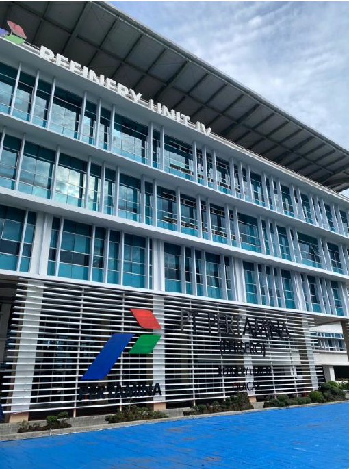
Profil Perusahaan
PT Kilang Pertamina Internasional (PT KPI) adalah Subholding Refining & Petrochemical PT Pertamina (Persero) yang merupakan strategic holding company. PT KPI mengembangkan investasi dan menjalankan bisnis Pertamina terkait pengolahan minyak bumi serta bahan lainnya menjadi produk-produk bahan bakar, pelumasan, petrokimia dan farmasi yang bernilai tinggi serta pengembangan bisnis pengolahan dan petrokimia dalam rangka memenuhi kebutuhan produk olahan dan petrokimia sesuai perkembangan pasar.
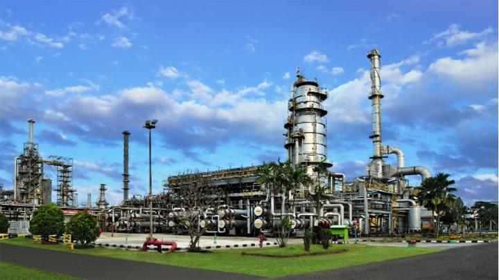
Riwayat Singkat PT Kilang Pertamina Internasional
2017
- Pada 13 November 2017 PT Kilang Pertamina Internasional (PT KPI) didirikan sebagai strategic holding company PT Pertamina (Persero) untuk menjalankan, mengendalikan, dan mengelola kegiatan investasi dan usaha terkait megaproyek pengolahan dan petrokimia.
- Pada 28 November 2017 didirikan PT Pertamina Rosneft Pengolahan dan Petrokimia (PT PRPP) sebagai Anak Perusahaan PT KPI untuk mengelola pembangunan proyek New Grass Root Refinery (NGRR) Tuban yang merupakan proyek kerja sama antara PT Pertamina (Persero) dan Rosneft Oil Company.
2019
- PT KPI mendirikan kembali satu anak perusahaan pada 7 Mei 2019, yaitu PT Kilang Pertamina Balikpapan (PT KPB), yang bertujuan untuk mengelola pembangunan Proyek Refinery Development Master Plan (RDMP) RU V Balikpapan dan dipersiapkan untuk menjadi perusahaan patungan bekerja sama dengan mitra.
2020
- Pada bulan Juni 2020, PT KPI semakin berkembang perannya selain mengelola proyek-proyek infrastruktur juga pengembangan bisnis pengolahan dan petrokimia serta mengelola kilang-kilang pengolahan & petrokimia yang sebelumnya dikelola oleh PT Pertamina (Persero) yaitu Refinery Unit II Dumai, Refinery Unit III Plaju, Refinery Unit IV Cilacap, Refinery Unit V Balikpapan, Refinery Unit VI Balongan dan Refinery Unit VII Kasim.
- Perubahan peran tersebut ditandai dengan pengukuhan PT Kilang Pertamina Internasional sebagai Subholding Refining & Petrochemical sebagai bagian dari pembentukan Holding Migas. Perubahan peran ini diikuti dengan pengangkatan Dewan Komisaris dan Direksi PT KPI yang baru.
PT Kilang Pertamina Internasional RU IV Cilacap
Dalam menjalankan bisnisnya, PT Kilang Pertamina Internasional RU IV Cilacap didukung oleh Sumber Daya Manusia yang kompeten dengan susunan struktur organisasi yang dipimpin oleh General Manager RU IV Cilacap dan dapat dilihat pada bagan berikut.
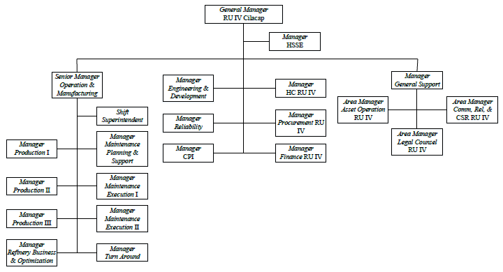
Fungsi Refinery Business and Optimization (RBO)
Fungsi Refinery Business and Optimization (RBO) merupakan salah satu fungsi operasional di RU IV Cilacap yang membawahi Refinery Planning, Supply Chain & Distribution, serta Performance & Evaluation. Susunan strukturnya dapat dilihat pada bagan berikut.
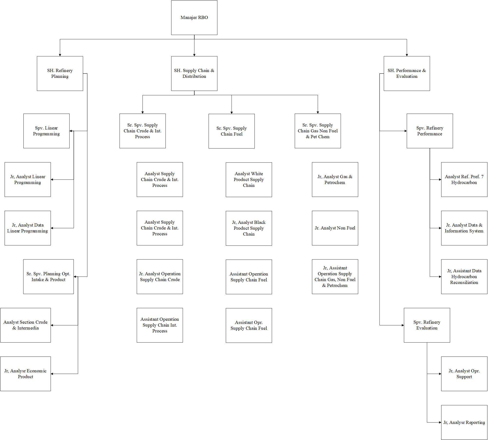
Ribu Barel/Hari Kapasitas Produksi Terbesar
Suplai BBM Nasional
Kebutuhan BBM di Pulau Jawa
Unit Pengolahan Minyak & Gas Bumi Pertamina
Perjalanan Pembangunan Kilang Cilacap
1974
- Mulai dibangun pada tahun 1974 dan beroperasi pada tahun 1976. Kilang ini dirancang untuk mengolah minyak mentah yang berasal dari Timur Tengah dan dari dalam negeri.
- Hasil olahannya mencakup produk penting seperti bahan bakar minyak (BBM), bahan dasar pelumas, dan aspal.
- Kapasitas awal pengolahan 100.000 barrel/hari, kemudian ditingkatkan pada tahun 1998/1999 menjadi 118.000 barrel/hari melalui Debottlenecking project.
- Keberadaan Kilang I menjadi awal pengembangan RU IV Cilacap sebagai salah satu kilang paling strategis di Indonesia untuk memenuhi kebutuhan minyak nasional.
1981
- Didirikan pada tahun 1981 dan mulai beroperasi pada tahun 1983 untuk menambah kapasitas produksi karena permintaan BBM dalam negeri yang terus meningkat.
- Kilang ini mengolah jenis minyak “cocktail”, yaitu minyak campuran.
- Kapasitas awal pengolahan 200.000 barrel/hari, kemudian ditingkatkan melalui proyek peningkatan kapasitas pada tahun 1998/1999 menjadi 230.000 barrel/hari.
1988
- Didirikan pada tahun 1988 dan mulai beroperasi pada tahun 1990. Berbeda dari dua kilang sebelumnya, Kilang Paraxylene fokus memproduksi bahan dasar petrokimia seperti paraxylene dan benzene yang banyak digunakan dalam industri tekstil, plastik, dan kimia lainnya.
- Pembangunannya mempertimbangkan ketersediaan bahan baku naphtha yang memadai dari Kilang Minyak II Cilacap, adanya fasilitas pendukung seperti dermaga, tangki, dan utilitas, serta peluang pasar yang menjanjikan di dalam maupun di luar negeri.
1995
- Pada tahun 1995 PT Pertamina merencanakan proyek Debottlenecking Kilang Minyak Cilacap. Proyek ini direncanakan karena kebutuhan BBM, minyak pelumas, dan aspal yang terus meningkat sejalan dengan pertumbuhan ekonomi dan semakin berkembangnya pembangunan nasional.
- Proyek ini mulai beroperasi pada tahun 1998/1999, sehingga kapasitas pengolahan Kilang Minyak I meningkat menjadi 118.000 barrel/hari dan Kilang Minyak II menjadi 230.000 barrel/hari.
- Tujuannya meningkatkan kapasitas produksi Kilang Minyak I dan II untuk memenuhi kebutuhan BBM dalam negeri, serta meningkatkan kapasitas produksi Lube Oil Plant untuk memenuhi Lube Base Oil dan Asphalt.
2002
- Kilang SRU (Sulphur Recovery Unit) merupakan salah satu proyek PT Pertamina yaitu Kilang Langit Biru Cilacap. Dibangun pada 27 Februari 2002 untuk mendukung komitmen perusahaan terhadap kelestarian lingkungan.
- Mulai beroperasi pada tahun 2005 dengan tujuan mengurangi emisi gas dari sisa proses pengolahan sehingga emisi yang dibuang ke udara lebih ramah lingkungan.
- Umpannya adalah sembilan stream sour gas yang sebelumnya hanya dikirim ke fuel gas system sebagai bahan bakar kilang atau dibakar di flare. Sour gas tersebut diolah menjadi bahan baku LPG, naphtha (condensate), dan molten sulphur (sulfur cair).
- Ini merupakan penerapan mengubah unvaluable product menjadi valuable product sehingga meningkatkan profit perusahaan dan mengurangi dampak kerusakan terhadap lingkungan.
2011
- Instalasi Pengolahan Air Limbah (IPAL) didirikan pada tahun 2011 hingga 2015 untuk meningkatkan baku mutu limbah cair agar tidak mencemari lingkungan saat dibuang ke lingkungan sekitar.
- Kilang Residual Fluid Catalytic Cracker (RFCC) dibangun untuk meningkatkan yield valuable product dan complexity index. Feed yang diolah adalah Low Sulphur Waxy Residue (LSWR) dari unit FOC II untuk menghasilkan produk BBM dengan nilai oktan tinggi.
- RFCC Cilacap merupakan kilang kedua yang dimiliki PT Pertamina (Persero) dari seluruh unit pengolahan di Indonesia, dibangun atas dasar perkiraan permintaan minyak yang terus meningkat dan untuk mengurangi ketergantungan impor produk minyak.
2016
- PLBC merupakan lanjutan dari pembangunan Residual Fluid Catalytic Cracker (RFCC).
- Mulai dilaksanakan pada tahun 2016 hingga saat ini.
- Bertujuan meningkatkan kualitas BBM menjadi standar EURO 4.
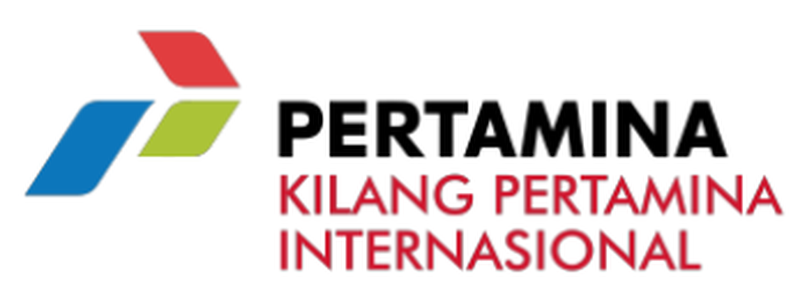
Makna Logo
Simbol grafis berbentuk anak panah pada logo Pertamina melambangkan aspirasi organisasi Pertamina untuk senantiasa bergerak ke depan, maju, dan progresif. Bentuk anak panah tersebut juga menyerupai huruf “P” yang merupakan huruf awal dari nama Pertamina. Tiga elemen berwarna yang terdapat pada logo tersebut melambangkan pulau-pulau dengan berbagai skala yang merupakan bentuk negara Indonesia.
- Warna biru memiliki arti andal, dapat dipercaya dan bertanggung jawab.
- Warna hijau memiliki arti sumber daya energi yang berwawasan lingkungan.
- Warna merah memiliki arti keuletan dan ketegasan serta keberanian dalam menghadapi berbagai macam kesulitan.
Perusahaan Terkait
Induk, Anak Perusahaan & Mitra
Inovasi
Inovasi Bisnis
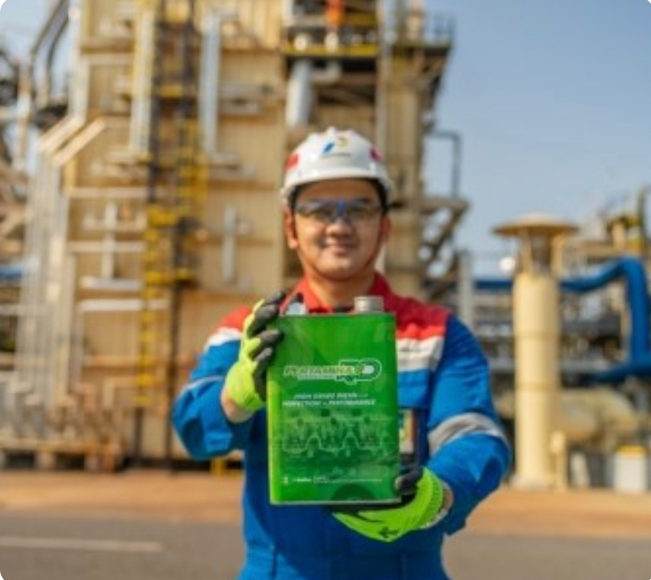
Pertamina Renewable Diesel (Pertamina RD)
Di tahun 2022, PT Kilang Pertamina Internasional (KPI) berhasil meluncurkan produk Hydrotreated Vegetable Oil dengan merek dagang Pertamina Renewable Diesel (Pertamina RD) dengan keunggulan kandungan sulfur yang rendah dan emisi 50% lebih baik dari EURO V.
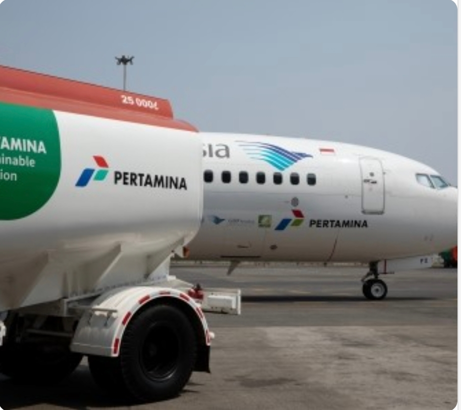
Sustainable Aviation Fuel (SAF)
Pada tahun 2023, untuk mendukung pencapaian target Net Zero Emission, PT Kilang Pertamina Internasional (KPI) meluncurkan Sustainable Aviation Fuel, yaitu bahan bakar ramah lingkungan untuk pesawat terbang. Pada tanggal 27 Oktober 2023 dilakukan uji terbang Pesawat Garuda Indonesia menggunakan Sustainable Aviation Fuel (SAF) J2,4. Adapun SAF diproduksi di Green Refinery RU IV Cilacap menggunakan metode co-processing ester dan fatty acid (HEFA). Uji terbang Bioavtur J2,4 pada pesawat Boeing 737-800 menunjukkan respon yang baik dan terkendali pada pesawat. Ini merupakan milestone lintas BUMN untuk ketahanan energi Indonesia.
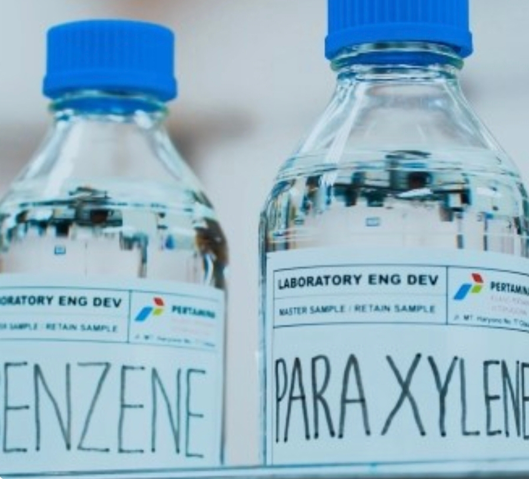
Produk-Produk Petrokimia
PT Kilang Pertamina Internasional (KPI) mengoperasikan Kilang Petrokimia, terdiri dari Kilang Paraxylene di RU-IV Cilacap yang memproduksi Paraxylene dan Benzene serta produk lainnya, Kilang Polypropylene di RU-III Plaju yang memproduksi Polytam (Polypropylene Pertamina) serta Kilang OCU (Olefin Convertion Unit) di RU-VI Balongan yang memproduksi Propylene.
Kegiatan
Galeri


Bisnis
Bisnis Kami
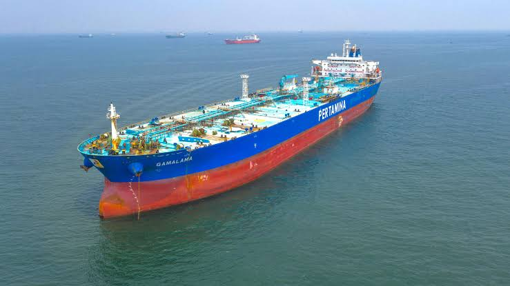
Management
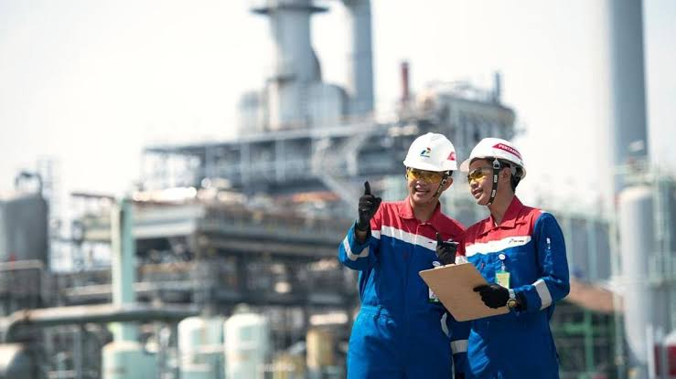
Transfer
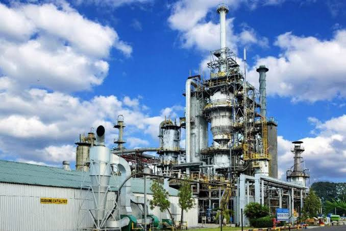
Operation
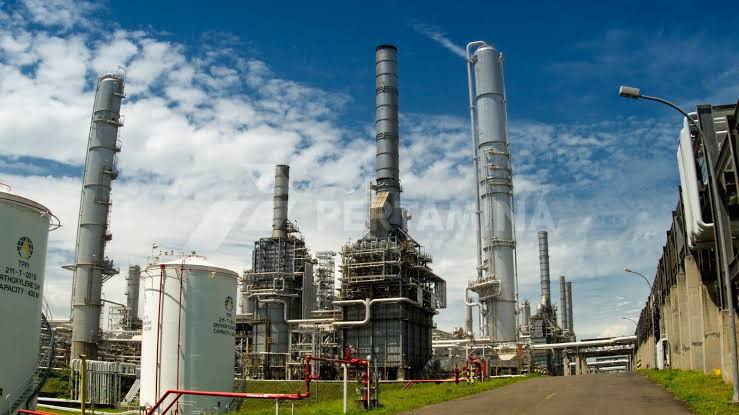
Infrastructure
F.A.Q
Pertanyaan yang Sering Diajukan
Apa itu PT Kilang Pertamina Internasional (PT KPI)?
PT KPI adalah Subholding Refining & Petrochemical PT Pertamina (Persero) yang menjalankan bisnis pengolahan minyak bumi dan petrokimia serta mengelola kilang-kilang Pertamina.
Di mana lokasi Refinery Unit IV?
Refinery Unit IV berlokasi di Cilacap, Jawa Tengah, dan menjadi salah satu kilang yang dikelola PT KPI.
Kilang apa saja yang dikelola PT KPI?
Refinery Unit II Dumai, Refinery Unit III Plaju, Refinery Unit IV Cilacap, Refinery Unit V Balikpapan, Refinery Unit VI Balongan, dan Refinery Unit VII Kasim.
Apa visi PT KPI RU IV Cilacap?
Menjadi Kilang Minyak yang Kompetitif di Dunia.
Apa semangat yang diusung PT KPI?
"One KPI, One Spirit", yaitu satu semangat untuk bekerja bersama dalam menjalankan bisnis kilang dan petrokimia.
Bagaimana cara menghubungi PT KPI RU IV Cilacap?
Silakan gunakan formulir pada bagian Kontak di bawah, atau hubungi alamat email dan nomor telepon yang tercantum di halaman ini.
Kontak
Butuh Bantuan? Hubungi Kami
Alamat
Jl. MT. Haryono No. 77, Kedung Lumbung, Lomanis, Kec. Cilacap Tengah, Kabupaten Cilacap, Jawa Tengah 53221
Telepon
+62 813 1468 8328
info@kpi.pertamina.com